WHY DEVELOPING COUNTRIES BORROW FROM THE WORLD BANK? (SQL FINANCIAL ANALYSIS)
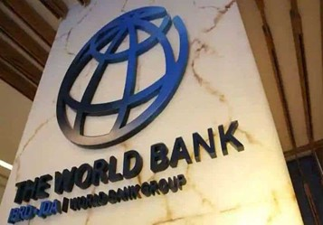
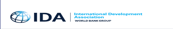
Introduction
"IDA is an extremely important instrument for African countries and for developing nations
as a whole because of the types of loans that are made available to our States."
(MACKY SALL, President of Senegal, July 17, 2021)
The World Bank Group is made up of IDA (International Development Association) and (IBRD)
International Bank for Reconstruction and Development. In this project, I focused on IDA
which is aimed at lending funds to developing nations with little or no service charge rates
to aid projects that have direct socio-economic effects to the nations. I have always had the
notion that Cameroon was one of the top borrowers from IDA and heavily indebted but I was
astonished when I found out that other countries, I thought were better positioned had more
loans such as Ghana, Nigeria, Kenya. Etc.
In this project emphasis was on Cameroon because it is my country of birth and I found it
interesting to dig deep into their financial transactions with The World Bank and to clear some
of the doubts I had. I decided to do a comparative study to get a clearer understanding of the
picture. In this regard, Senegal was chosen with approximately the same per capita income like
Cameroon to do the comparative study.
For a country to secure a loan (grant) from IDA, that country had to have a good record in management
of the country as well as credits and grants received for IDA projects. IDA has a number of criteria
for a country to meet before a loan can be granted, and one of them is that the said country must
have a per capita income below their cut-off threshold. All developing countries are below the limit
and this explains why IDA give grants only to them. The duration of each credit depends on the
socio-economic size of the country and it ranges from 30, 38 or 40 years.
The Dataset
Working with this type of high-volume data, it is sometimes cumbersome, time consuming, needs high-functional
computer, and prone to making errors that can be avoided if working with a smaller data set. In order to
narrow down or filter the data, I used PostgreSQL to query the data to get the desired rows and columns for
analysis. The dataset can be found here and it is made up of 1.2 million rows and 30 columns and was last
updated on the 17th, March 2023.
Key Insights
- Cameroon is not amongst the top 15 countries due to IDA.
- The highest funded project in Cameroon is The Cameroon-Chad Transport Corridor with an amount
of $313,000,000 and the borrower is the Ministry of Economy, Planning and Regional Development.
- The total number of credits and grants granted to Cameroon to finance projects was 14063.
- The Original Principal Amount granted to Cameroon was $501,588,272,988 and total Due to IDA (owed)
was $149,225,026,293. So far, approximately 70% excluding the Service Charge Rate of the grants had
been paid.
- The Original Principal Amount for Senegal was $754,000,512,143, Total Due to IDA $293,872,937,246.
Senegal had paid 60% excluding Service Charge Rate.
- Cameroon had cleared 5243 of its credits with IDA and have a status of fully paid in their records
and 98 projects grants and credit have been signed.
- IDA has a comparatively low Service Charge Rate
Analysis
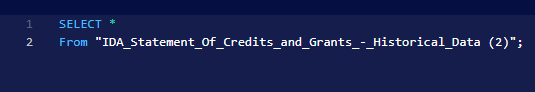
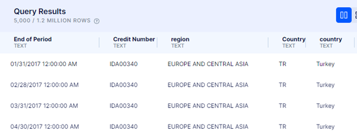
Despite numerous other institutions where developing countries can borrow funds from, they find the World Bank
a safe heaven. The interest rate is relatively low with an average of 0.7827 and most or all developing
countries found it easy to meet the terms of loan approval.
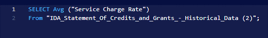
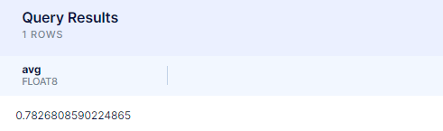
After getting an overview of the data, I went further to select the top countries due to IDA. This was because
I wanted to find out if Cameroon was among. To my greatest dismay India happened to be top on the list due to IDA
with $793,256,127.6 followed by Kenya with $780,555,197.6 and Cameroon did not appear on the list.
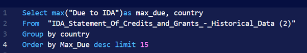
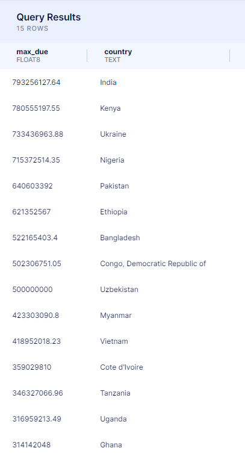
Cameroon has carried out numerous projects ranging from small to giant ones and according to the results, it has
a total of 14,063 projects executed or in process thanks to credit and grants form IDA.
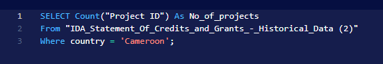
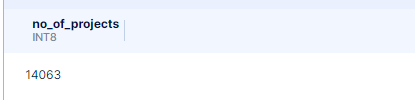
A further breakdown of this number into the various stages (Credit Status) of the credit and grant stages gave the
following numbers;
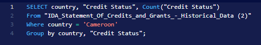
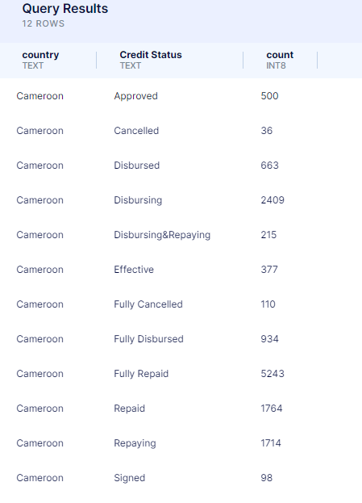
Amongst the projects, I decided to look at where the largest portion of this money went to. I did not
only look for the maximum funded project but also went further to write a query to get the top 10 projects in
descending order. The project with the highest amount was the Cameroon-Chad Transport Corridor with an amount of
$313,000,000 followed by Logorc (LOCAL GOVERNANCE AND RESILIENT COMMUNITIES) project.
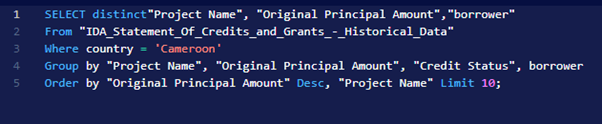
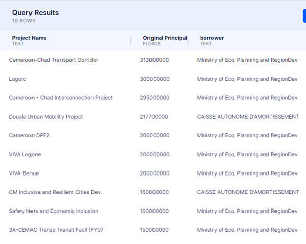
After getting the most expensive project, I was a bit curious to know which were the least. The project with the least
amount was CAISSE AUTONONOME D’AMORTISSEMENT (Autonomous Sinking Fund) costing $550,000 followed by $778,448.2 for the
Douala infrastructure for the fiscal year 2003 borrowed by MINISTERE DES INVESTISSEMENT PUBLIQUES (Ministry of Public Investments)
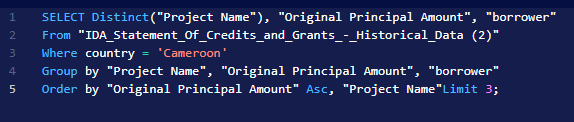
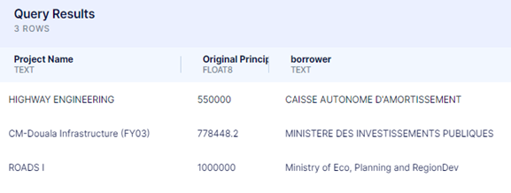
In the course of my analysis, I realised that we can’t be dwelling on other aspects of the transactions without knowing the
debt situation of the country. To do this, I decided to get a sum of the Original Principal Amount which stands
at $501,666,922,983.9
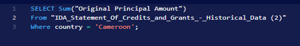
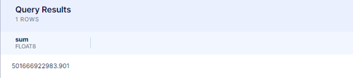
In the same way I got the Total Amount Due to IDA (debt) as $149,225,026,293
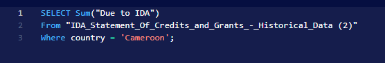
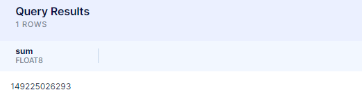
These two figures give us an understanding of the financial situation of Cameroon towards IDA. If we do a simple calculation, we
realise that the total amount Due to IDA is approximately 30% excluding service charge rate. It is not included in the calculation
because the rates are varied.
Despite being a debtor, the country still borrows a lot of money. Below were some of the most recent credits with some in the process
of disbursing and others pending disbursement.
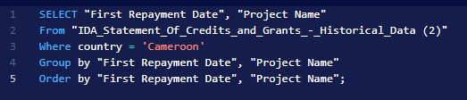
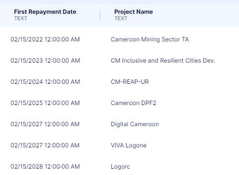
I earlier mentioned that I shall do my analysis and compare with Senegal since they have similar GDP. The total Original Principal
Amount for Senegal is $754,000,512,142.6. If you go back to the result showing sum of Original Principal Amount borrowed by Cameroon,
you will notice that Senegal has borrowed $252,333,589,158.7 more than Cameroon.
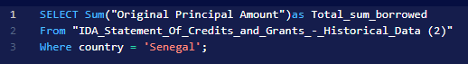
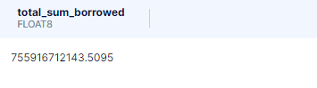
Senegal’s total debt due to IDA almost doubled that of Cameroon. A simple arithmetic was done to get the difference in amount.
$293872937245.3 -$149,225,026,293 = $144,647,910,952.3
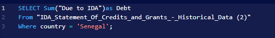
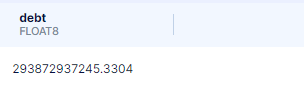
Senegal has submitted 26919 applications for grants and credits and not all were approved. Cameroon on the other had 14063 applications.
From these number of applications from both countries, it is evident that Senegal applied for 12856 more credits and grants than Cameroon.
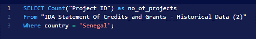
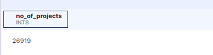
But this figure did not tell us the status of the applications. In order to get a clearer understanding of the figure, I wrote a query to get the
Credit Status of the country. It was noticed that 10,700 credits had fully been paid and 332 approved pending disbursement in the case of Senegal.
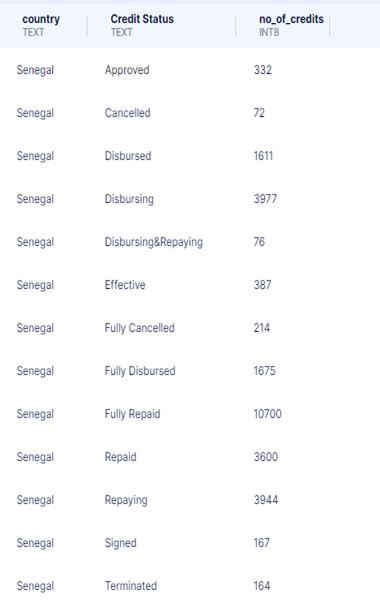
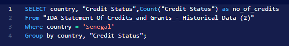
The table below depicts an overview of five countries and some of the attributes to gauge their engagements with IDA. Amongst them, Nigeria has the
highest service charge rate and the least is Senegal. Furthermore, the total sum of credit if arranged in descending order puts Nigeria on, the top
followed by Kenya, Ghana, Senegal and Cameroon.
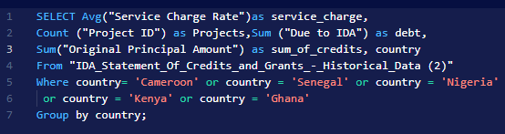
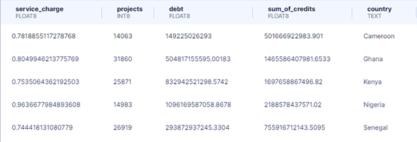
Recommendations and more findings
Summarily, Cameroon has got little fundings from IDA as compared to these randomly selected developing countries (See query). A country like Nigeria
had a total credit and grants of more than a trillion dollars and with a fewer number of projects. This indicated that the number of projects with
grants or credit from IDA was not proportional to the borrowed amount.
The service charge rate differs from country to country and ranges from zero to a maximum of 6.52 as of 17/03/2023 when the data was last updated.
More findings should be carried out to ascertain the reasons for the disparity.
Thank you immensely for taking you precious time to read this article. I very much appreciate. Please feel free to leave a comment.